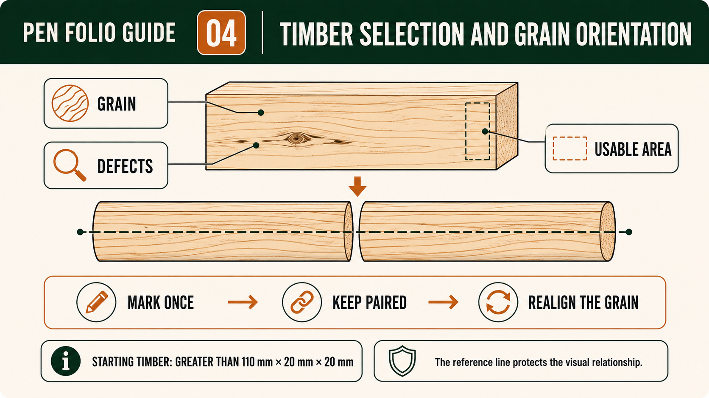
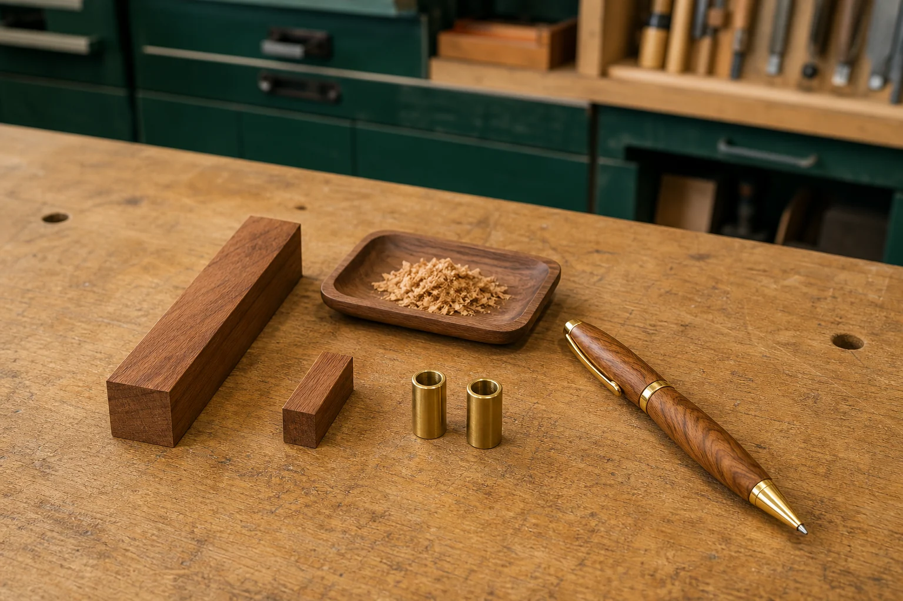

Module presentation
Learn with the slides
Use the presentation to preview Selecting and inspecting timber for the Pen blank, Using grain orientation to keep the two Pen bodies visually connected, Planning responsible material use and the Pen cutting list before working through the theory, videos, checks and written evidence.
Weeks 3-4
This module
Inspect the approved blank, preserve grain orientation and plan material use without inventing a kit cutting schedule.
Your work
Student details
Your entries save automatically in this browser. Use Print / Save PDF before leaving the page.
Theory 1
Selecting and inspecting timber for the Pen blank
Selecting suitable timber is the first quality decision in the Pen project. The approved process begins with timber greater than 110 mm long × 20 mm × 20 mm, but this starting requirement does not define the final product or justify guesswork. It simply sets a minimum size for preparation. Students must read this information carefully and combine it with the approved process resource, local workshop stock, teacher directions and school procedures. A thoughtful selection at this stage supports safer handling, clearer marking, more controlled preparation and a higher-quality finished pen.
Begin with what you can observe directly. Look along the length of the timber to judge whether it appears straight and free from obvious distortion. Examine each visible face for splits, cracks, loose areas, damaged corners or irregular surfaces. Soundness means the timber appears stable and able to withstand the approved preparation and turning stages without breaking apart. Students are expected to identify and record these visible features, but they are not expected to make final technical judgements alone. If there is any doubt about a defect or condition, teacher approval is required before proceeding.

Grain direction and figure are also important considerations. Grain direction describes the path of the timber fibres, while figure refers to the visible pattern created by natural variation. These features influence both appearance and how the timber behaves during later stages. Grain that runs consistently along the length can support clearer reference marking and more predictable results, while figure can contribute to the visual appeal of the finished pen. However, appearance should not override suitability. A visually interesting piece is not appropriate if it contains defects that may compromise quality or safety.
Timber selection affects the success of later stages such as marking, drilling and turning. If the timber is uneven, damaged or difficult to read, it can make it harder to place and maintain accurate reference lines. This can lead to misalignment when the parts are prepared and reassembled. Visible defects may become more noticeable as material is removed, and hidden weaknesses may appear during turning. Students should understand that problems at later stages often begin with poor initial selection. Careful inspection helps reduce avoidable issues and supports consistent quality throughout the process.
Responsible material use is part of the success criteria. Students should avoid rejecting timber without a clear reason, as this creates unnecessary waste. At the same time, selecting unsuitable timber can result in failure and even greater material loss. The goal is to choose a piece that is fit for purpose based on observable evidence and teacher guidance. Consider whether the timber is sound, reasonably straight and capable of producing a consistent result. Use only what is needed, follow workshop procedures for offcuts and unused material, and recognise that good selection supports both efficiency and sustainability.
Your folio should show how the selection decision was made. Record the approved starting size, describe the observable features you inspected and explain why the chosen piece appeared suitable. If a concern was identified, note how it was resolved with teacher input. This evidence should connect forward to later stages, such as how clearly reference marks were established, how the material responded during preparation and the final surface quality. By linking your initial inspection to the finished outcome, you demonstrate that quality manufacture begins with informed material selection, not just the visible result at the end.
- Confirm the timber meets the approved starting size of greater than 110 mm long × 20 mm × 20 mm.
- Inspect for soundness, straightness and visible defects on all faces.
- Consider grain direction and figure for both behaviour and appearance.
- Seek teacher approval for any uncertain defects or material concerns.
- Record the reason for selection and how it supports quality and responsible use.
Theory 2
Using grain orientation to keep the two Pen bodies visually connected
Grain orientation helps the two timber bodies of the Pen appear as parts of one coordinated design rather than as unrelated pieces. Grain is the general direction of the timber fibres, while figure is the visible pattern produced by features such as colour variation, lines and natural changes in the material. When the two prepared parts are kept in their intended relationship, parts of this pattern may appear to continue from one body to the other. This visual connection is a quality feature because it shows that the timber was observed, marked and managed carefully throughout the project.
The approved process uses a mark placed along the length of the timber and crossing its centre. This mark acts as an orientation reference before the timber is prepared into two parts. It does not represent a cut position, finished profile or new measurement. Its purpose is to preserve information about how the original piece was arranged. Later, when the prepared timber parts are placed on the approved mandrel, the centre and grain line should correspond. Students should understand this purpose before work continues so that the mark is protected and used rather than accidentally removed, ignored or misunderstood.
Visual continuity can be lost when the prepared parts are mixed with other material, rotated around their length, reversed end for end or placed in the wrong relationship. Even when both parts come from the same original timber, an incorrect orientation may make the figure appear interrupted or cause distinctive grain lines to point in conflicting directions. This may not prevent the pen from existing as an object, but it can weaken the visual quality of the result. Keeping the parts together and checking their orientation reduces reliance on memory, which becomes especially important when several similar-looking Pen projects are being completed in the same workshop.

Orientation labels support the main grain reference by making the intended relationship easier to follow. Students should use only the labels, marks or recording system approved by the teacher and project resource. A useful system clearly distinguishes the two parts while preserving their shared centre and grain line, but it should not introduce invented kit positions or assembly details. Labels need to remain understandable at later checkpoints and should be recorded in the folio if they form part of the student’s quality-control method. The goal is not to cover the timber with unnecessary marks; it is to retain enough reliable information to prevent avoidable confusion.
Before the prepared timber parts progress, compare them with the approved source and confirm that the centre and grain line correspond. This is an appropriate teacher checkpoint because a second set of eyes can identify a reversed or rotated part before later work makes the mistake harder to correct. The teacher also confirms how the approved mandrel and local kit information apply to the project. Students should not respond to uncertainty by copying a machine setup from another kit, estimating a position from an image or inventing a correction. The correct action is to pause, preserve the parts and seek approval.
Progressive folio evidence should show how grain continuity was managed, not merely present a final photograph of the completed Pen. Early evidence may show the original lengthwise centre and grain mark and explain its purpose. A later record can show the two prepared parts arranged with the line corresponding before the approved next stage. Final evidence should evaluate whether the grain and figure remain visually connected and identify any interruption honestly. This sequence demonstrates cause and effect: the timber was observed, a reference was established, orientation was checked and the finished appearance was judged against the project’s quality expectations.
- Observe the grain direction and visible figure before the timber is prepared.
- Use the approved lengthwise mark crossing the centre as the main orientation reference.
- Keep the two prepared Pen parts together and protect their identification.
- Check for mixing, rotation or reversal before the approved mandrel stage.
- Record the original mark, later alignment and final visual continuity as progressive evidence.
Theory 3
Planning responsible material use and the Pen cutting list
Planning responsible material use begins with understanding what the cutting list communicates in the Pen project. A cutting list is not a guess or a set of invented sizes; it is a clear, organised record of the components you intend to prepare, using only verified information. For this project, the only confirmed starting stock size is timber greater than 110 mm long × 20 mm × 20 mm. All other sizes, quantities and kit-dependent details must come from the approved process resource, the supplied kit information and teacher direction. The cutting list shows that you can read and trust these sources, organise your work and avoid unnecessary waste.
A well-prepared cutting list separates what is known from what must be confirmed. Known information includes the starting stock requirement and any details explicitly provided in the approved resource. Unknown values are not guessed; they are recorded as items to be confirmed with the teacher or checked against the supplied kit. This distinction is important because it prevents errors from entering your plan. A cutting list that includes assumptions may lead to incorrect preparation, wasted material and rework. A careful list shows discipline: you record verified facts and identify where further confirmation is required before proceeding.

Material-efficiency planning means using the available timber in a way that achieves the required outcome with minimal waste. In the Pen project, this involves thinking about how the starting piece will be prepared into the required parts while preserving grain orientation and maintaining suitable dimensions for later stages. Although you are not inventing cut positions or sizes, you are expected to consider how to use the material sensibly. This includes avoiding unnecessary trimming, keeping parts paired where required and planning for offcuts that may still be useful. Efficient planning reduces cost, saves time and supports consistent results.
Offcuts and waste streams should be considered as part of responsible practice. Not all leftover material is waste. Usable offcuts may be suitable for testing, demonstration or future small tasks, depending on teacher guidance and workshop procedures. True waste should be handled according to school systems, separating recyclable material where appropriate and keeping the workspace clean and safe. These decisions connect directly to the production flowchart, where inputs, processes and outputs are identified. Outputs include both the finished pen and any waste or by-products, so your planning should show how you intend to reduce and manage these responsibly.
Responsible material use also includes thinking about durability and the broader impact of your choices. A pen that is carefully planned and made is more likely to function well and last longer, reducing the need for replacement and additional material use. While you are not naming timber species or suppliers, you should recognise that materials come from real sources and that thoughtful use supports sustainability. This perspective belongs in your production flowchart, where social and environmental impacts are linked to your decisions about preparation, efficiency and care of materials.
Your folio should provide clear evidence of how the cutting list supported responsible use. Include the verified starting size, the recorded components based on approved information and any values that were confirmed with the teacher. Explain how your plan reduced waste, how offcuts were managed and how your decisions connect to the production flowchart. This evidence should show that responsible material use is not an afterthought; it is built into your planning and carried through to the finished Pen. Strong documentation demonstrates that you worked with purpose, accuracy and respect for materials.
- Record the verified starting stock size and only include dimensions confirmed by the approved resource or teacher.
- Separate known values from items that require teacher confirmation in the cutting list.
- Plan material use to reduce waste while maintaining required quality and orientation.
- Identify usable offcuts and follow workshop procedures for waste management.
- Link material decisions to inputs, outputs and impacts in the production flowchart.
Guided practice
Weeks 3-4 knowledge checks
Choose an answer, check it and use the progressive hints and feedback to improve.
Apply your learning
Scaffolded written responses
Write first, use the feedback prompts, then compare your reasoning with the appropriate response example.
Finish the two-week block
Save your evidence
Your work saves in this browser, but browser storage is not the official submission. Save the completed page as a PDF before changing devices or clearing browser data.
No marks, answers or personal information are sent from this webpage.